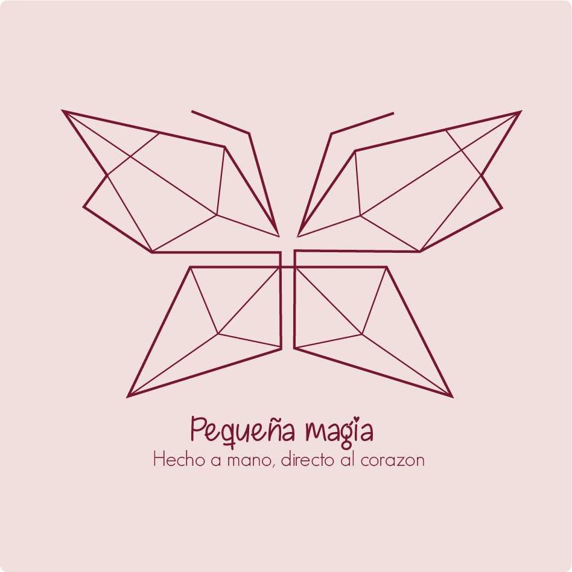

Hola, soy karol
Producción Multimedia
Creo, diseño y transformo ideas en experiencias visuales a través del diseño, la fotografía, el video y la creatividad.
Ver mis trabajos
Creo, diseño y transformo ideas en experiencias visuales a través del diseño, la fotografía, el video y la creatividad.
Ver mis trabajos
Hola, soy karol, estudiante de Producción Multimedia. Me interesa la creación de contenido visual y audiovisual, el diseño gráfico, la fotografía, la edición de video y el desarrollo de páginas web. A través de mis proyectos busco aprender, experimentar y desarrollar nuevas ideas utilizando diferentes herramientas digitales y creativas. Este portafolio reúne algunos de mis trabajos y proyectos, mostrando mi proceso de aprendizaje, mi creatividad y las habilidades que he desarrollado en el área de la multimedia.
La producción de video es una de las áreas que más me interesa dentro de la Producción Multimedia. En mis proyectos trabajo diferentes etapas del proceso audiovisual, comenzando por la planificación de la idea y la creación del guion. Después se realiza la preparación del espacio, la organización de los elementos necesarios y la grabación del material. Finalmente se realiza la edición del video, utilizando música, efectos de sonido, transiciones, textos y efectos visuales.
La fotografía es una herramienta que permite contar historias y transmitir emociones a través de imágenes. En mis proyectos fotográficos trabajo aspectos como la composición, la iluminación, los ángulos y la creatividad. También realizo procesos de selección y edición de imágenes para mejorar su calidad y lograr un resultado visual atractivo.


El diseño gráfico me permite comunicar ideas utilizando diferentes elementos visuales como colores, formas, imágenes y tipografías. En mis proyectos he trabajado en la creación de piezas gráficas como logos, afiches, publicaciones y diferentes contenidos. Durante el proceso de diseño busco organizar los elementos de manera clara y atractiva para transmitir correctamente un mensaje.

La ilustración es una forma de expresar ideas, emociones e historias a través de imágenes. En mis proyectos de ilustración desarrollo personajes, escenarios y diferentes conceptos visuales. Este proceso me permite explorar la creatividad y encontrar nuevas formas de comunicar ideas.


Las redes sociales son una herramienta importante para compartir contenido y comunicar diferentes mensajes. En esta área trabajo en la creación de piezas visuales para plataformas digitales, teniendo en cuenta la creatividad, el diseño y el público al que va dirigido el contenido. Entre los contenidos que puedo desarrollar se encuentran publicaciones, historias, reels y diferentes piezas gráficas.
Creación, grabación y edición de videos.
Creación de piezas visuales y composiciones gráficas.
Captura y edición de imágenes.
Creación de páginas utilizando HTML y CSS.
Desarrollo de ideas y conceptos visuales.
Creación de contenido para plataformas digitales.
¿Quieres conocer más sobre mis proyectos?
Puedes contactarme para conocer más sobre mi trabajo y mis proyectos de Producción Multimedia.